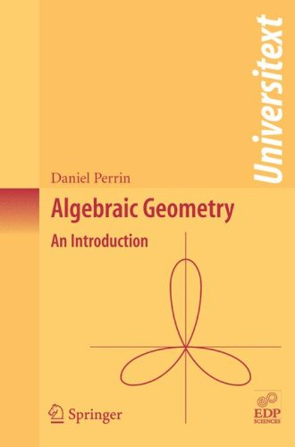

Schedule
- Affine algebraic sets
- Ideals and affine varieties
- Irreducibility
- Nullstellensatz
- First step towards Bézout's Theorem
- Projective algebraic sets
- Projective spaces
- Ideal of a projective algebraic set
- Sheaves and varieties
- Structural sheaf of affine algebraic sets
- Algebraic varieties
- Local rings
- Sheaves of modules on varieties
- Dimension
- Topological definition and the link with algebra
- Dimension and counting equations
- Morphisms and dimension
- Tangent spaces and singular points
- Singular points
- Regular local rings
- Curves
- Bézout's Theorem
- Intersection multiplicities
- Bézout's Theorem
- Sheaf cohomology
- Arithmetic genus of curves and the weak Riemann-Roch theorem
- Euler-Poincaré characteristic
- Degree and genus of projective curves, Riemann-Roch 1
- Divisors on a curve and Riemann-Roch 2
|
|
 |